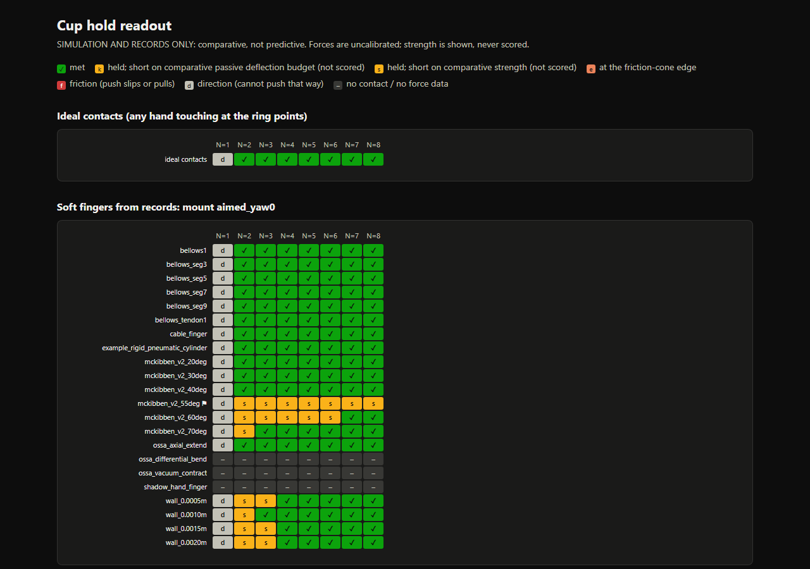
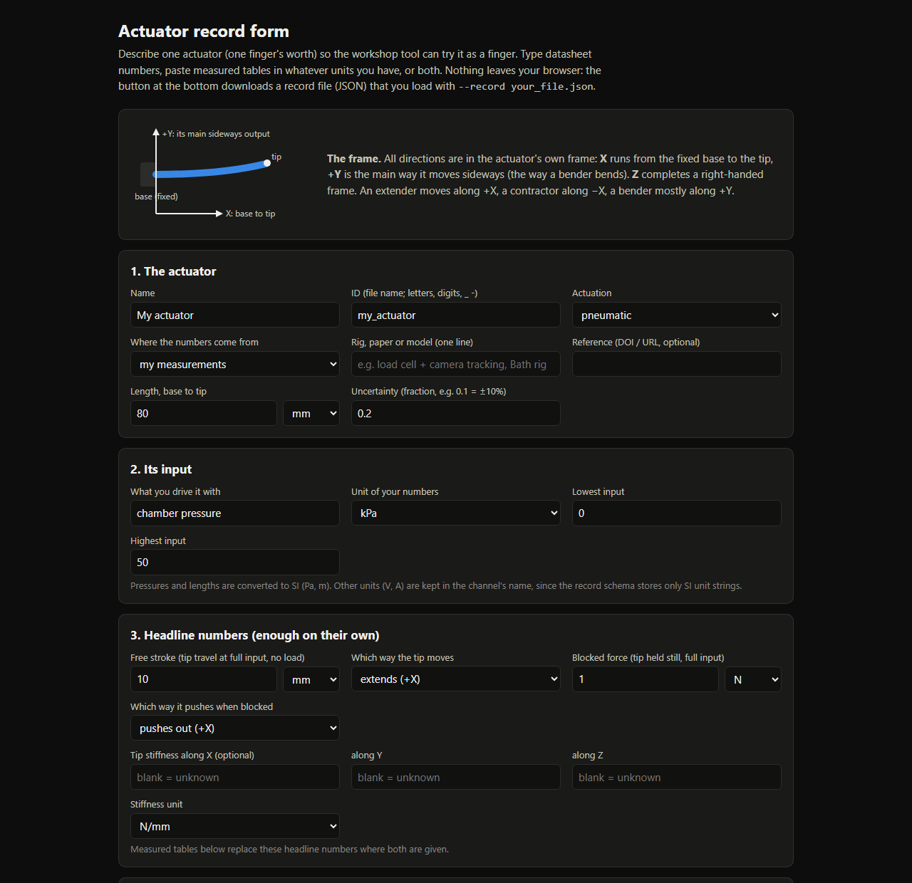
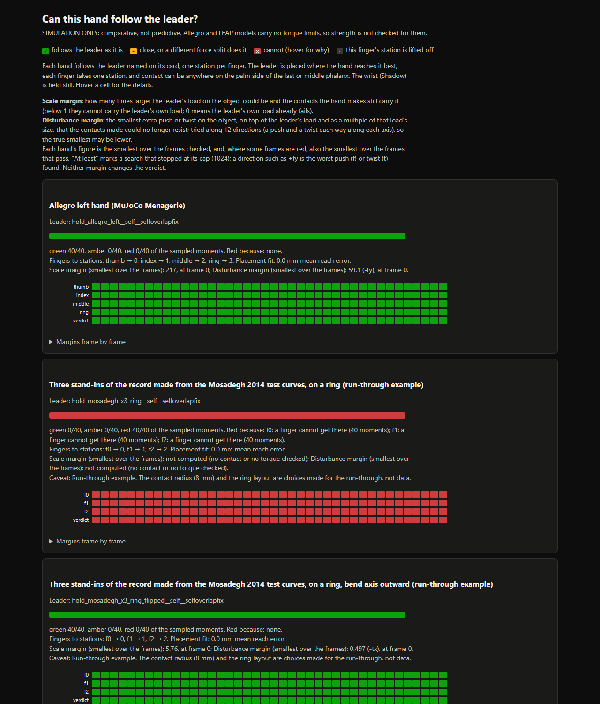

The screens of the workshop tool as it is now, in the order a participant meets them. Each is labelled by where it appears. Most of the day is a terminal; the pages come at the start and at the verdict.
13 terminal screens6 browser pages1 picture file1 text table
The quick start
After the install, the README's first three commands run the demos on the stored records. Each prints a few lines and writes a page.
The page a demo writes
browser page
One row per stored actuator, one column per number of fingers. Hovering a cell gives its numbers. This is the page stored in the repository; the demos were not run again for this view.
cup_hold.html

Picture of outputs/cup_hold.html. Hovering does nothing in a picture.
Bring an actuator
Three ways in: type datasheet numbers into a form, give test curves, or give a table of joints.
The record form, as it opens
browser page
The values shown are the form's own starting values. The button at the bottom downloads a record file. The picture shows the top of the form.
record_form.html

Picture of forms/record_form.html. Hovering does nothing in a picture.
Test curves to a record, and what the tool reads from it
terminal
No page or picture is written at this step. The check says in words that this record has motion and no force.
$ python tools/curves_to_record.py data/test_curves/mosadegh2014_fPN.csv --out rt_out/r0/mosadegh_from_curves.jsonwrote rt_out/r0/mosadegh_from_curves.json (tier 1); check it with python tools/check_record.py rt_out/r0/mosadegh_from_curves.json$ python tools/check_record.py rt_out/r0/mosadegh_from_curves.json== rt_out/r0/mosadegh_from_curves.json
id mosadegh2014_fPN_from_curves name 'Mosadegh 2014 fPN (fast pneu-net)' tier 1
what the tool reads (canonical frame: X base->tip, +Y main sideways output):
push direction - from no force data: this actuator cannot push in the tool
push force - (comparative unless calibrated)
motion [-0.539, -0.842, +0.000] from scalars.free_direction
stroke 94.9 mm
stiffness [+0.000, +0.000, +0.000] N/m (x, y, z) no_stiffness_data
$ python tools/joint_table_to_record.py data/joint_tables/shadow_hand_finger.csv --out rt_out/r0/shadow_finger_from_table.jsonnote blocked force limited by joint J3
wrote rt_out/r0/shadow_finger_from_table.json (tier 1)$ python tools/check_record.py rt_out/r0/shadow_finger_from_table.json== rt_out/r0/shadow_finger_from_table.json
id shadow_hand_finger_from_joint_table name 'Shadow Hand finger from its joint table' tier 1
what the tool reads (canonical frame: X base->tip, +Y main sideways output):
push direction [+0.000, +1.000, +0.000] from blocked.force_N (full force vector), highest input level
push force 10.42 N (comparative unless calibrated)
motion [-0.081, +0.997, +0.000] from scalars.free_direction
stroke 129 mm
stiffness [+0.000, +0.000, +0.000] N/m (x, y, z) k_x missing -> 0; k_z missing -> 0
push vs motion 5 deg apart (a bender often pushes along X but moves along Y)
One command draws every stored record's Gramian in one figure.
In the environment the install gives
terminal
It stops for want of matplotlib, which no install extra provides (issue 36).
$ python tools/figure_gramians.py --records data/records --out-dir rt_out/r0/gramiansTraceback (most recent call last):
File "<clone>\tools\figure_gramians.py", line 468, in <module>
sys.exit(main())
^^^^^^
File "<clone>\tools\figure_gramians.py", line 460, in main
draw(drawn, left_out, a.records, base + ".png", base + ".svg")
File "<clone>\tools\figure_gramians.py", line 315, in draw
import matplotlib
ModuleNotFoundError: No module named 'matplotlib'
$ python tools/figure_gramians.py --records data/records --out-dir outputs/day_view_12nov/gramiansdrawn 21, left out 6; wrote outputs/day_view_12nov/gramians\record_gramians_b.png/.svg/.json/.md
not drawn: abboodi2026_ossa5_bending: no stored Gramian and no free tip curve (holds: blocked curve)
not drawn: example_rigid_pneumatic_cylinder: no stored Gramian and no free tip curve (holds: headline numbers only)
not drawn: ossa_axial_extend: no stored Gramian and no free tip curve (holds: headline numbers only)
not drawn: ossa_differential_bend: no stored Gramian and no free tip curve (holds: headline numbers only)
not drawn: ossa_vacuum_contract: no stored Gramian and no free tip curve (holds: headline numbers only)
not drawn: shadow_hand_finger: no stored Gramian and no free tip curve (holds: headline numbers only)
Either fingers built from a record, placed on a ring by a hand file the participant writes, or a hand they bring as a model file.
Building a hand from the test-curve record: the first two tries
terminal
Both stop. The first needs the record named by its path, the second needs a contact radius in the hand file. Neither is in the docs (issue 32).
$ python tools/build_record_hand.py data/hands/rt0_curves_by_id/hand.jsonTraceback (most recent call last):
File "<clone>\tools\build_record_hand.py", line 329, in <module>
main()
File "<clone>\tools\build_record_hand.py", line 317, in main
rep = build(ap.parse_args().hand_file)
^^^^^^^^^^^^^^^^^^^^^^^^^^^^^^^^
File "<clone>\tools\build_record_hand.py", line 160, in build
ff, fit = fit_finger(spec)
^^^^^^^^^^^^^^^^
File "<clone>\tools\build_record_hand.py", line 83, in fit_finger
rec = load_record(spec["record"])
^^^^^^^^^^^^^^^^^^^^^^^^^^^
File "<clone>\gramian_workshop\finger.py", line 43, in load_record
load_manifest()["records"][rid_or_path]["file"])
~~~~~~~~~~~~~~~~~~~~~~~~~~^^^^^^^^^^^^^
KeyError: 'mosadegh2014_fPN_from_curves'$ python tools/build_record_hand.py data/hands/rt0_curves_by_path/hand.jsoncannot build: f0 (rt_out/r0/mosadegh_from_curves.json): no contact radius: record gives no material volume and length
The tool draws no picture of the hand it built. What the participant has is this text, a model file and a fit report.
$ python tools/build_record_hand.py data/hands/mosadegh2014_fPN_from_curves_x3_ring_flipped/hand.jsonf0: rt_out/mosadegh_from_curves.json, fit check PASS, radius 8.00 mm (hand file)
f1: rt_out/mosadegh_from_curves.json, fit check PASS, radius 8.00 mm (hand file)
f2: rt_out/mosadegh_from_curves.json, fit check PASS, radius 8.00 mm (hand file)
f0 round trip: {"free_levels_checked": 5, "tip_err_max_m": 0.0002789597328578172, "fit_free_err_max_m": 0.00027895974356597963, "tip_err_with_out_of_plane_max_m": 0.0002789597328578172, "tip_err_with_out_of_plane_share_of_stroke": 0.002938459868970257, "tip_err_note": "tip_err is in the bending plane, as the fit check measures it, so it should equal the fit's error; the second figure adds the record's out-of-plane drift, which a planar chain cannot follow", "drive_spring_balance_max": 2.7786412060137877e-10, "loader_tip_offset_m": 0.0, "model_file_tip_rule_offset_m": 0.013856406472954422, "loader_tip_note": "hands.Finger takes the chain's end as the fingertip of a hand built from records (issue 16). The rule for model-file hands (the farthest bounding-box corner of the distal capsule) would sit about a capsule radius (and a corner) past it: model_file_tip_rule_offset_m"}
f1 round trip: {"free_levels_checked": 5, "tip_err_max_m": 0.00027895973285780716, "fit_free_err_max_m": 0.00027895974356597963, "tip_err_with_out_of_plane_max_m": 0.00027895973285780716, "tip_err_with_out_of_plane_share_of_stroke": 0.002938459868970151, "tip_err_note": "tip_err is in the bending plane, as the fit check measures it, so it should equal the fit's error; the second figure adds the record's out-of-plane drift, which a planar chain cannot follow", "drive_spring_balance_max": 2.7786412060137877e-10, "loader_tip_offset_m": 0.0, "model_file_tip_rule_offset_m": 0.013856406472954422, "loader_tip_note": "hands.Finger takes the chain's end as the fingertip of a hand built from records (issue 16). The rule for model-file hands (the farthest bounding-box corner of the distal capsule) would sit about a capsule radius (and a corner) past it: model_file_tip_rule_offset_m"}
f2 round trip: {"free_levels_checked": 5, "tip_err_max_m": 0.00027895973285780716, "fit_free_err_max_m": 0.00027895974356597963, "tip_err_with_out_of_plane_max_m": 0.00027895973285780716, "tip_err_with_out_of_plane_share_of_stroke": 0.002938459868970151, "tip_err_note": "tip_err is in the bending plane, as the fit check measures it, so it should equal the fit's error; the second figure adds the record's out-of-plane drift, which a planar chain cannot follow", "drive_spring_balance_max": 2.7786412060137877e-10, "loader_tip_offset_m": 0.0, "model_file_tip_rule_offset_m": 0.013856406472954422, "loader_tip_note": "hands.Finger takes the chain's end as the fingertip of a hand built from records (issue 16). The rule for model-file hands (the farthest bounding-box corner of the distal capsule) would sit about a capsule radius (and a corner) past it: model_file_tip_rule_offset_m"}
wrote data\hands\mosadegh2014_fPN_from_curves_x3_ring_flipped\hand.xml
The tool repeats back what it read from the model, then gives the next two commands.
$ python tools/add_hand.py external/mujoco_menagerie/wonik_allegro/left_hand.xml outputs/run_through_11nov/hand_descriptions/allegro_left.jsonallegro_left: Allegro left hand (MuJoCo Menagerie)
model: <clone>\external\mujoco_menagerie\wonik_allegro\left_hand.xml
16 joints, 16 actuators, 0 joint couplings
joints every finger shares (read as a wrist, held at rest): none
palm (bodies of no finger that have collision geometry): palm
finger thumb: fingertip body th_tip; joints thj0, thj1, thj2, thj3; 4 inputs (model actuators); torque limits: data sheet figure; contact pad 16.0 mm long, radius 12.0 mm
finger index: fingertip body ff_tip; joints ffj0, ffj1, ffj2, ffj3; 4 inputs (model actuators); torque limits: data sheet figure; contact pad 20.0 mm long, radius 12.0 mm
finger middle: fingertip body mf_tip; joints mfj0, mfj1, mfj2, mfj3; 4 inputs (model actuators); torque limits: data sheet figure; contact pad 20.0 mm long, radius 12.0 mm
finger ring: fingertip body rf_tip; joints rfj0, rfj1, rfj2, rfj3; 4 inputs (model actuators); torque limits: data sheet figure; contact pad 20.0 mm long, radius 12.0 mm
Added. The tools now know this hand as "allegro_left" (<added hands>\allegro_left\hand.json).
The model is read from where it is: if you move it, add the hand again.
Next, a hold this hand can do by construction, and the check on it:
python tools/make_hold_leader.py allegro_left
python tools/run_follow.py --hands allegro_left --leader-id hold_allegro_left__self__selfoverlapfix --placement-from outputs/hold_placement_allegro_left__selfoverlapfix.json --tag fixed
verdicts_log.txt, step add_allegro (exit 0, 4 s)
Give it a task
The simplest task is a hold made from the hand's own kinematics.
Make a hold for each hand
terminal
One line each. The second hand's facing is the only sign, at this step, that its fingers curl away from the ball.
$ python tools/make_hold_leader.py allegro_left --out-dir rt_out/leaders --results-dir rt_out/resultsallegro_left: curl [0.6, 0.6, 0.5, 0.6], sphere R = 30.00 mm at [6.14, -9.23, 94.96] mm, contact miss per finger [1.618, 4.167, 1.519, 2.493] mm, facing [58.4, 84.0, 14.2, 80.3] deg, palm penetration 0.00 mm, other-link overlap 0.00 mm, overlap with itself 0.00 mm, object mass 15.13 g
wrote rt_out\leaders\hold_allegro_left__self__selfoverlapfix.json and rt_out\results\hold_placement_allegro_left__selfoverlapfix.json$ python tools/make_hold_leader.py mosadegh_x3_ring --out-dir rt_out/leaders --results-dir rt_out/resultsmosadegh_x3_ring: curl [0.0, 0.0, 0.0], sphere R = 30.00 mm at [0.0, 0.0, 117.48] mm, contact miss per finger [0.0, 0.0, 0.0] mm, facing [98.3, 98.3, 98.3] deg, palm penetration 0.00 mm, other-link overlap 0.00 mm, overlap with itself 0.00 mm, object mass 18.77 g
wrote rt_out\leaders\hold_mosadegh_x3_ring__self__selfoverlapfix.json and rt_out\results\hold_placement_mosadegh_x3_ring__selfoverlapfix.json
The check prints its verdict in the terminal. Two more commands turn the result into pages. These steps were run again on 12 Nov with the code as it is now.
The check on the model-file hand
terminal
$ python tools/run_follow.py --hands allegro_left --leader-id hold_allegro_left__self__selfoverlapfix --placement-from outputs/run_through_11nov/results/hold_placement_allegro_left__selfoverlapfix.json --tag fixed --margins --out-dir outputs/day_view_12nov/resultsallegro_left: note: outputs/run_through_11nov/results/hold_placement_allegro_left__selfoverlapfix.json has no placement key; re-scoring its placement anyway
allegro_left on hold_allegro_left__self__selfoverlapfix: {'green': 40}; red because {}; assignment {'thumb': 0, 'index': 1, 'middle': 2, 'ring': 3}; placement cost 0.00 mm; respaced by [0, 0, 0, 0] deg; 46.4 s
per finger: {('index', 'green'): 40, ('middle', 'green'): 40, ('ring', 'green'): 40, ('thumb', 'green'): 40}
overlap (deepest part of each posed finger, per frame): median 0.65 mm, max 0.75 mm; allowed 3 mm at the contact, other contact {'allowed': True, 'max_overlap_m': 0.003}
scale margin: smallest 217 (frame 0)
disturbance margin: smallest 59.11 (frame 0, worst direction -ty)
no finger is amber or red, no joint is past a limit
Every finger is red for reach. The fix is to reverse each finger's bend_axis in the hand file; the tool does not say so.
$ python tools/run_follow.py --hands mosadegh_x3_ring --leader-id hold_mosadegh_x3_ring__self__selfoverlapfix --placement-from outputs/run_through_11nov/results/hold_placement_mosadegh_x3_ring__selfoverlapfix.json --tag fixed --margins --out-dir outputs/day_view_12nov/resultsmosadegh_x3_ring: note: outputs/run_through_11nov/results/hold_placement_mosadegh_x3_ring__selfoverlapfix.json has no placement key; re-scoring its placement anyway
mosadegh_x3_ring on hold_mosadegh_x3_ring__self__selfoverlapfix: {'red': 40}; red because {'no_contact': 40}; assignment {'f0': 0, 'f1': 1, 'f2': 2}; placement cost 0.00 mm; respaced by [0, 0, 0] deg; 19.7 s
per finger: {('f0', 'red'): 40, ('f1', 'red'): 40, ('f2', 'red'): 40}
overlap (deepest part of each posed finger, per frame): median -18.47 mm, max -18.47 mm; allowed 3 mm at the contact, other contact {'allowed': True, 'max_overlap_m': 0.003}
scale margin: none (no contact or no torque checked)
disturbance margin: none (no contact or no torque checked)
f0: red (reach) frames 0 to 39 (40)
f1: red (reach) frames 0 to 39 (40)
f2: red (reach) frames 0 to 39 (40)
This green is not a strength result: the record has no force data (issue 35). It also stands with a base hinge posed past its limit (issue 34).
$ python tools/run_follow.py --hands mosadegh_x3_ring_flipped --leader-id hold_mosadegh_x3_ring_flipped__self__selfoverlapfix --placement-from outputs/run_through_11nov/results/hold_placement_mosadegh_x3_ring_flipped__selfoverlapfix.json --tag fixed --margins --out-dir outputs/day_view_12nov/resultsmosadegh_x3_ring_flipped: note: outputs/run_through_11nov/results/hold_placement_mosadegh_x3_ring_flipped__selfoverlapfix.json has no placement key; re-scoring its placement anyway
mosadegh_x3_ring_flipped on hold_mosadegh_x3_ring_flipped__self__selfoverlapfix: {'green': 40}; red because {}; assignment {'f0': 0, 'f1': 1, 'f2': 2}; placement cost 0.00 mm; respaced by [0, 0, 0] deg; 91.4 s
per finger: {('f0', 'green'): 40, ('f1', 'green'): 40, ('f2', 'green'): 40}
overlap (deepest part of each posed finger, per frame): median -0.02 mm, max -0.02 mm; allowed 3 mm at the contact, other contact {'allowed': True, 'max_overlap_m': 0.003}
scale margin: smallest 5.76 (frame 0)
disturbance margin: smallest 0.4968 (frame 0, worst direction -tx)
f0_hinge0: past its upper limit by 0.115 rad, frames 0 to 39 (40)
f1_hinge0: past its upper limit by 0.115 rad, frames 0 to 39 (40)
f2_hinge0: past its upper limit by 0.115 rad, frames 0 to 39 (40)
$ python tools/report_failures.py outputs/day_view_12nov/results/follow_mosadegh_x3_ring_flipped__hold_mosadegh_x3_ring_flipped__self__selfoverlapfix__fixed.json --out-dir outputs/day_view_12nov/resultsmosadegh_x3_ring_flipped on hold_mosadegh_x3_ring_flipped__self__selfoverlapfix: 40 frames, 40 green (frames numbered by position)
f0_hinge0: past its upper limit by 0.115 rad, frames 0 to 39 (40)
f1_hinge0: past its upper limit by 0.115 rad, frames 0 to 39 (40)
f2_hinge0: past its upper limit by 0.115 rad, frames 0 to 39 (40)
wrote outputs/day_view_12nov/results\follow_mosadegh_x3_ring_flipped__hold_mosadegh_x3_ring_flipped__self__selfoverlapfix__fixed__failures.md
wrote outputs/day_view_12nov/results\follow_mosadegh_x3_ring_flipped__hold_mosadegh_x3_ring_flipped__self__selfoverlapfix__fixed__failures.html
Picture of outputs/day_view_12nov/results/follow_allegro_left__hold_allegro_left__self__selfoverlapfix__fixed__failures.html. Hovering does nothing in a picture.
Picture of outputs/day_view_12nov/results/follow_mosadegh_x3_ring__hold_mosadegh_x3_ring__self__selfoverlapfix__fixed__failures.html. Hovering does nothing in a picture.
Picture of outputs/day_view_12nov/results/follow_mosadegh_x3_ring_flipped__hold_mosadegh_x3_ring_flipped__self__selfoverlapfix__fixed__failures.html. Hovering does nothing in a picture.
The page for all three hands
browser page
Top of the page.
follow_today.html

Picture of outputs/day_view_12nov/results/follow_today.html. Hovering does nothing in a picture.